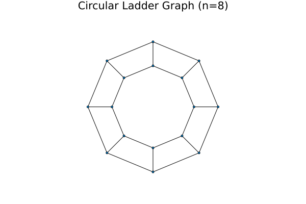
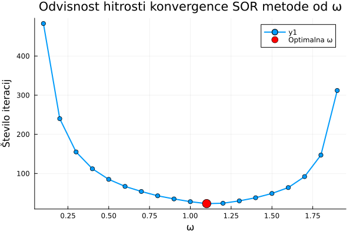

Dokumentacija za Domačo Nalogo 1
Funkcionalnosti paketa
Homework1.RedkaMatrika — TypeRedkaMatrika{T<:Number}A custom sparse matrix data type.
Homework1.sor — Functionsor(A, b, x0, omega; tol=1e-10, max_iter=1000) -> (Vector, Int)Solves the linear system Ax = b using the Successive Over-Relaxation (SOR) iterative method.
Arguments
A::RedkaMatrika: The square, sparse matrix of the system.b::Vector: The right-hand side vector.x0::Vector: The initial guess for the solution.omega::Real: The relaxation parameter (typically 0 < omega < 2).tol::Real=1e-10: The tolerance for stopping; iteration stops when the infinity norm of the residual is less thantol.max_iter::Int=1000: The maximum number of iterations.
Returns
Vector: The computed approximate solutionx.Int: The number of iterations performed.
Base.getindex — Functiongetindex(A::RedkaMatrika{T}, i::Int, j::Int) where TReturns the value of the element at position (i, j). Enables A[i, j] syntax.
Base.size — Functionsize(A::RedkaMatrika) -> Tuple{Int, Int}Returns the dimensions of the sparse matrix as a tuple (n, n).
Base.setindex! — Functionsetindex!(A::RedkaMatrika{T}, value::T, i::Int, j::Int) where TSets the value of the element at position (i, j). Enables A[i, j] = value syntax.
Base.:* — Function*(A::RedkaMatrika{T}, v::Vector{T}) where T -> Vector{T}Computes the product of a sparse matrix A and a vector v.
Uporaba metode
V tem poglavju si bomo pogedali primer uporabe metode sor na problemu vložitvi grafa v ravnino. Nato bomo na primeru poiskali optimalni (\omega).
Vložitev grafa v ravnino
Za demonstracijo uporabe SOR metode smo implementirali algoritem za vložitev grafa v ravnino z uporabo fizikalne metode. Ta metoda modelira graf kot sistem vzmeti, kjer so vozlišča predstavljena kot masne točke, povezave pa kot vzmeti z naravno dolžino nič.
Matematični model
Fizikalna metoda temelji na minimizaciji energije sistema vzmeti. Za graf $G = (V, E)$ z vozlišči $V$ in povezavami $E$ definiramo energijsko funkcijo:
\[E = \frac{1}{2} \sum_{(i,j) \in E} ||p_i - p_j||^2\]
kjer je $p_i$ pozicija vozlišča $i$ v ravnini. Minimum te funkcije dosežemo, ko je za vsako prosto vozlišče $i$ izpolnjen pogoj:
\[\sum_{j \in N(i)} (p_i - p_j) = 0\]
kjer je $N(i)$ množica sosedov vozlišča $i$. To vodi do sistema linearnih enačb oblike $Ax = b$, kjer matrika $A$ vsebuje informacije o strukturi grafa.
Primer: krožna lestev
Kot testni primer smo uporabili krožno lestev z $n = 8$ vozlišči na vsakem od dveh ciklov. Graf ima skupaj 16 vozlišč, pri čemer so vozlišča prvega cikla (1-8) fiksirana na enotski krožnici, vozlišča drugega cikla (9-16) pa so prosta in jih določimo z optimizacijo.

Rezultat prikazuje simetrično vložitev, kjer so prosta vozlišča razporejena v notranjem krogu, povezana pa so z ustreznimi vozlišči na zunanjem krogu.
Optimalni omega
Parameter $\omega$ v SOR metodi določa hitrost konvergence iterativnega postopka. Za optimalno delovanje metode je ključno določiti pravo vrednost tega parametra.
Teoretično ozadje
SOR metoda je posplošitev Gauss-Seidlove iteracije z relaksacijskim parametrom $\omega$:
\[x_i^{(k+1)} = (1-\omega)x_i^{(k)} + \frac{\omega}{a_{ii}}\left(b_i - \sum_{j<i} a_{ij}x_j^{(k+1)} - \sum_{j>i} a_{ij}x_j^{(k)}\right)\]
Za simetrične pozitivno definitne matrike obstaja optimalna vrednost $\omega_{opt}$, ki minimizira spektralni radij iteracijske matrike.
Eksperimentalna analiza
Za sistem linearnih enačb iz problema vložitve krožne lestvi smo testirali različne vrednosti parametra $\omega$ v intervalu $[0.1, 1.9]$ in izmerili število iteracij potrebnih za konvergenco.

Rezultati kažejo tipično U-obliko krivulje, kjer:
- Pri nizkih vrednostih $\omega < 1$ je konvergenca počasna (podrelaksacija)
- Optimalna vrednost $\omega_{opt} = 1.1$ zagotavlja najhitrejšo konvergenco
- Pri visokih vrednostih $\omega > 1.5$ se hitrost konvergence ponovno zmanjša (nadrelaksacija)
Rezultati
Za obravnavani sistem smo dobili:
- Optimalna vrednost: $\omega_{opt} = 1.1$
- Minimalno število iteracij: 23 iteracij
Ta rezultat je skladen s teoretičnimi pričakovanji za pozitivno definitne sisteme, kjer optimalna vrednost $\omega$ običajno leži med 1 in 2. Vrednost $\omega = 1.1$ kaže na to, da je za ta specifičen problem potrebna le rahla nadrelaksacija za dosego optimalnih rezultatov.